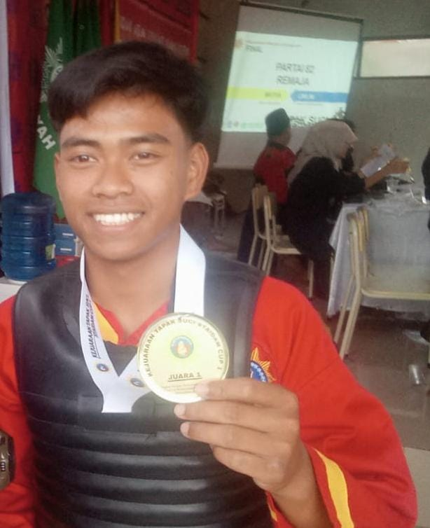
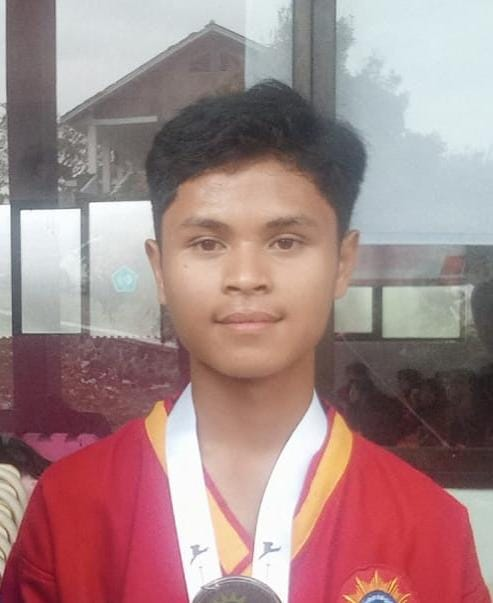

|  |
M. NANANG
1. JUARA 1 BLAC3 Tingkat Nasional 2021
2. JUARA 2 DEC CUP Tingkat Kabupaten Garut 2021
3. JUARA 1 D2AM Tingkat Jawa Barat 2022
4. JUARA 1 STAIDA CUP Tingkat Kabupaten Garut 2023
5. JUARA 3 PORKAB GARUT 2024 Tingkat Kabupaten Garut 2024 |
|
CITRA BERLIANA PUTRI
1. JUARA 3 BLAC3 Tingkat Nasional 2021
2. JUARA 3 DEC CUP Tingkat Kabupaten Garut 2021
3. JUARA 1 D2AM Jawa Barat 2022
4. JUARA 2 STAIDA CUP Tingkat Kabupaten Garut 2023
|
|
PINGKI NURLAELA
JUARA 3 STAIDA CUP Tingkat Kabupaten Garut |
|
RIZKI PUTRA
1. JUARA 2 D2AM Tingkat Jawa Barat
2. JUARA 2 STAIDA CUP Tingkat Kabupaten Garut
|
|  |
LUCY AIRLANGGA
1. JUARA 2 STAIDA CUP 1
2. JUARA 2 SELEKSI POPWILDA
3. JUARA 3 POPWILDA |